33 Chapter 33 — The Frontier: What's Changing in 2025-2026
The living chapter — models, hardware, benchmarks, agents, and the staleness triggers that keep it honest
33.1 How to Read a Living Chapter
Everything in the first 32 chapters was verified at a date. This chapter is where the date matters most: every entry carries a checked date and a [verify] tag where the claim is not independently confirmed, and the whole chapter has a re-verify-before-citing banner. A frontier claim that is six months old is a history claim. The structure: models, hardware, benchmarks, agents — then honest projections, the watchlist, and the staleness mechanism. The style-rule compliance: entries are measured (our labs, the dates on the lab artifacts), source-backed (the verified URLs), or [verify]-marked — nothing in this chapter is an unmarked claim.
The worked sports throughout this chapter are the same two the book has trained on: pickleball (fixed camera, 13.41 m × 6.10 m, doubles, 26-player interactions reduced to four on the court at once) and rugby league (broadcast pan-tilt-zoom cameras, 100 m × 68 m, 26 players, high contact, frequent occlusion). If a frontier item does not help one of those two sports, we say so explicitly. When we extrapolate beyond verified fact, we label the sentence as [SPECULATION]. The goal is not to be comprehensive; it is to be honest about what a practitioner can build on today versus what is still a conference headline.
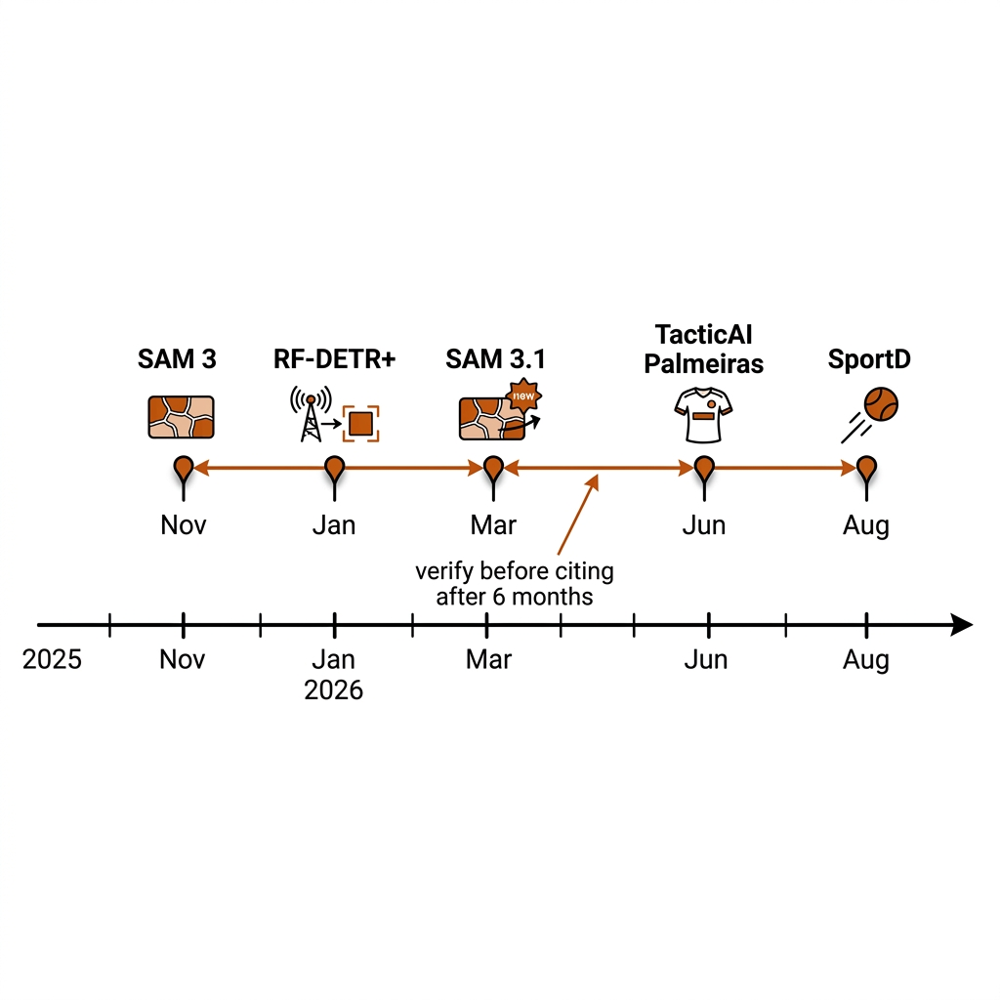
33.2 Models (checked 2026-08-30 → 2026-09-05)
The 2025-2026 model landscape has three big shifts: segmentation is now promptable by language, detection is dominated by open-license DETRs, and tracking is being rewritten by learned association rather than hand-crafted matching. Each shift changes what a small sports lab can build locally.
Segmentation and dense perception
SAM 3 (Meta, released November 2025, facebookresearch/sam3) introduced Promptable Concept Segmentation: a single text prompt or visual exemplar can detect, segment, and track all instances of a concept across a video with stable IDs. For rugby league, that means a prompt like "track every player in white" can replace the per-object box prompts that made SAM 2 unwieldy on a 26-player frame. For pickleball, it means a prompt like "the yellow ball" or "both paddles" can bootstrap a tracker without first training a detector. The license is the custom SAM License, permissive with use restrictions, not Apache 2.0. The practical blocker, checked 2026-08-30, is that the official repository is CUDA/Triton-first; local MPS use depends on Ultralytics or Hugging Face Transformers patches, and the custom CUDA NMS kernels remain a friction point. [verify] whether the latest HF Transformers port removes the custom-CUDA NMS blocker before citing a clean MPS path.
SAM 3.1 (Meta, released March 27, 2026) is a drop-in speed update whose headline feature is Object Multiplex. Instead of processing each tracked object in its own forward pass, SAM 3.1 groups up to 16 objects into buckets and processes them jointly. On a single H100 this yields roughly a 7× speedup when tracking 128 objects and doubles throughput for medium-density scenes, without sacrificing segmentation accuracy. For rugby league, that is the difference between a 26-player frame fitting in real time and not. The promptable concept capability is unchanged. License and precise benchmark deltas are still marked [verify], but the release date and Object Multiplex behavior are source-backed.
DINOv3 (Meta, August 2025) is a self-supervised vision foundation model with ViT and ConvNeXt variants up to 7B parameters, trained on 1.7 billion images, using Gram anchoring to stabilize dense features. The practitioner meaning is straightforward: it is the best frozen backbone for small-head detection, ReID, and pose probes when you do not have sport-specific pretraining. DEIMv2 and the SAM-3D-Body lineage both use DINOv3. The license is a custom DINO license that permits commercial use with restrictions and gates the weights; it is not Apache. On the lab M4 Max, the ViT-S and ViT-B variants run on MPS via Hugging Face Transformers; the 7B variant is not a local proposition. [verify] whether any 2026 sport fine-tune on DINOv3 outperforms DINOv2 enough to justify the license complexity.
Detection
RF-DETR (Roboflow, March 2025, Apache 2.0 for N/S/M/L weights) is a real-time DETR built from weight-sharing neural architecture search on a DINOv2 backbone, NMS-free, and the first real-time detector to exceed 60 COCO AP on the 2XL variant. It is the book's default detector recommendation for both sports: the N/S/M/L weights are fully open, fine-tuning is small-dataset friendly, and inference runs on MPS or CPU. Training is CUDA-first, so the lab recipe is to fine-tune on Colab and deploy on the Mac. The user's original prompt mentioned "RF-DETR v2"; we found no model named RF-DETR v2. The larger variants are called RF-DETR+ (XL/2XL, January 2026), released under the Roboflow Platform Model License (PML) 1.0, which requires a Roboflow account. They are only worth using if RF-DETR-L misses ball-scale objects in wide rugby shots. [verify] whether any 2026 SportsMOT leaderboard leader used RF-DETR+.
D-FINE (ICLR 2025, Apache 2.0) is a real-time DETR that redefines bounding-box regression with Fine-grained Distribution Refinement (FDR) and GO-LSD self-distillation. The official D-FINE-L reaches 54.0 AP on COCO; when trained with the DEIM framework, D-FINE-L reaches 56.0 AP and D-FINE-X reaches 56.5 AP. It is the fully-open accuracy reference when RF-DETR's license split or MPS friction is a problem. DEIM (CVPR 2025, Apache 2.0) adds Dense One-to-One matching and a Matchability-Aware Loss, roughly halving the convergence time of D-FINE and RT-DETR. The combination DEIM + D-FINE-X = 56.4 AP is the best fully-open real-time DETR stack as of August 2026. For a small pickleball lab, DEIM means fewer GPU hours to fine-tune on a few hundred labeled frames.
DEIMv2 (September 2025, non-commercial custom license verified in the repository LICENSE.md) swaps in a DINOv3 backbone and a Spatial Tuning Adapter. DEIMv2-S hits 50.9 AP under 10 million parameters, and DEIMv2-X reaches 57.8 AP. That is the 2026 accuracy ceiling, but the non-commercial license bars use in commercial coaching products, so the book's default product path remains RF-DETR / D-FINE / DEIM. [verify] the EdgeCrafter (TMLR 2026) license and its exact relation to DEIMv2.
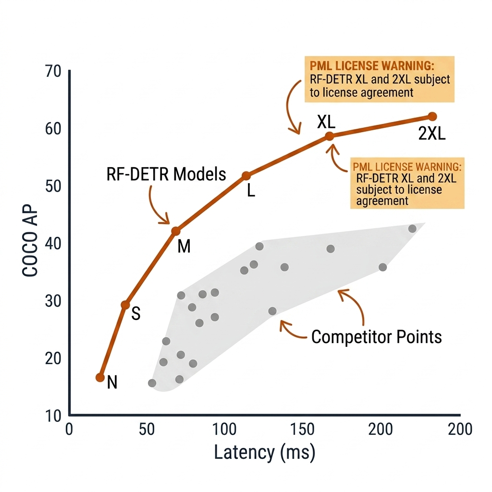
Tracking
CAMELTrack (May 2025, Apache 2.0) is the clearest signal that the 2025-2026 sports-MOT story is about learned association. It keeps the classic Track-by-Detection modularity but replaces hand-crafted matching with a two-transformer module trained association-centrically. It is lightweight PyTorch, runs fine on MPS, and drops into TrackLab. The SportsMOT 2026 leaderboard, checked 2026-08-30, is led by GTA (Global Tracklet Association, MIT) at 81.04 HOTA, followed by Deep HM-SORT around 80.1 HOTA. The previous draft incorrectly attached the 81.04 HOTA score to CAMELTrack; that score belongs to GTA. CAMELTrack is still the best open Apache-2.0 learned-association tracker to build on. GTA is an offline appearance-based tracklet split-and-link pass that can be bolted onto any tracker; it lifted SoccerNet trackers from 79.41% to 83.11% HOTA in the paper. For rugby league, an offline GTA pass is a natural post-game identity repair step after a live tracker has struggled through scrums and re-entries.
TrackNetV5 (December 2025) is the successor ball tracker. It uses Motion Direction Decoupling (signed-polarity fields) and an R-STR transformer head to fix the directional ambiguity of TrackNetV4's absolute-difference maps. The paper reports F1 0.9859 on the TrackNetV2 tennis dataset. The paper is open, but the SDK, weights, and training data are proprietary to Shanghai Code Zero. The official SDK requires CUDA 12.6. For pickleball, the architecture is a direct upgrade path; the practical lab route is to reimplement the paper in PyTorch/MPS and fine-tune on a local pickleball corpus. [verify] whether any open PyTorch reimplementation has shipped.
3D, calibration, and scene reconstruction
VGGT (CVPR 2025 Best Paper, Meta / VGG Oxford) is a feed-forward model that predicts camera intrinsics and extrinsics, depth maps, point maps, and 3D point tracks from one to hundreds of uncalibrated images in a single sub-second pass. It replaces COLMAP/SfM as the front end for scene reconstruction. For pickleball, a phone walk-around of the court can produce a calibrated mesh; for rugby league, a cluster of broadcast PTZ frames can yield camera poses for registration. The code is under a custom research license (AUP); the VGGT-1B-Commercial checkpoint permits commercial use but is gated behind a Hugging Face application form, similar to LLaMA, with an explicit military-use exclusion. [verify] whether the commercial-checkpoint form is still active and the current turnaround time. An MPS community port (vggt-mps) runs on the M4 Max; the official path remains CUDA-oriented.
Theiner CVSports 2026 (CVPR 2026 Workshop on Computer Vision in Sports) introduced Unified Sports Field Registration with Lens Distortion Modeling. It jointly estimates camera pose, intrinsics, and lens distortion from minimal point-on-segment annotation. This matters because consumer cameras, GoPros, and phones used in amateur pickleball setups introduce barrel distortion that a pure homography pipeline silently ignores. The paper is on CVF Open Access; the code release status and license remain [verify]. If the code is released, this becomes the 2026 calibration baseline for both sports.
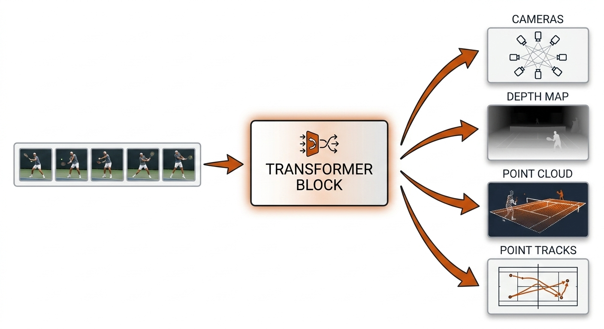
Video foundation models
V-JEPA 2 (Meta, June 2025, MIT license) is a masked latent-prediction video SSL model. It reports 39.7% Recall@5 on EPIC-KITCHENS-100 action anticipation, 77.3% on Something-Something-V2 probe, and 90.2% on Diving48. The recipe is to freeze the video foundation model and train small probe heads on top. For rugby league, a V-JEPA probe can spot high-tackle or off-the-ball events without a full detector pipeline; for pickleball, it can retrieve rallies or spot shot-type transitions. On the M4 Max, ViT-L runs on 64 GB MPS; ViT-g is slower.
V-JEPA 2.1 (Meta, March 2026, MIT license) refines the architecture with a dense predictive loss and deep self-supervision across intermediate encoder layers, plus multi-modal tokenizers and scaled capacity. It achieves 40.8 Recall@5 on EPIC-KITCHENS-100 high-level action anticipation, and 77.7% on Something-Something-V2 global recognition. The dense features enable detector-free region tracking and court-zone activity maps. On the M4 Max, ViT-B and ViT-L run; the 2B variant is effectively 128 GB-only. [verify] whether any 2026 sports paper has benchmarked V-JEPA 2.1 against supervised alternatives on a sport-specific task.
Tactical and agentic models
TacticAI (DeepMind × Liverpool, 2024, Nature Communications) is an equivariant graph neural network for corner-kick tactics: it predicts receiver and shot outcomes and suggests counterfactual player repositioning. The 2026 claim, reported in secondary tech coverage, is that an open-play extension was deployed at Palmeiras with the Brazilian Football Confederation (CBF) in June 2026. The Nature Communications paper and DeepMind blog are primary sources for the corner-kick version; the Palmeiras/CBF open-play deployment is still [verify] against a DeepMind or CBF primary source. The modelling pattern is the durable lesson: a GNN over the player graph plus generative counterfactual repositioning.
TacSIm (CVPR 2026, arXiv 2603.25199) is a tactical-style imitation benchmark built from Premier League broadcast trajectories. It classifies tactical phases and measures style similarity through occupancy and movement-vector metrics. The key insight is that coaches want agents that imitate real team style and support counterfactuals, not reward-maximizing agents that discover degenerate football. The arXiv ID and venue are source-backed; the code release status and license are [verify].
33.3 Hardware (checked 2026-08-30)
The 2025-2026 hardware story is the fusion of wearable/inertial sensors with optical tracking, the arrival of smart-court consumer products, and the first credible AI line-calling deployments. The honest split is unchanged: professional systems cost professional money, while the amateur path is increasingly a phone, a 360° camera, and an Apple Vision Pro.
Ball state and player tracking
Kinexon PERFORM LPS and GPS Pro are ultra-wideband (UWB) local positioning systems that provide sub-10 cm indoor 2D/3D tracking; they are the NBA's indoor standard. Kinexon xBall (also called Connected Ball Technology) embeds a lightweight, mechanically counter-balanced sensor package combining UWB and a 500 Hz inertial measurement unit inside the ball. The sensor reports ball speed, trajectory, spin, and the exact millisecond of a touch. For the 2026 FIFA World Cup, Kinexon's technology is integrated into the official Adidas Trionda match ball to support semi-automated offside and handball adjudication. In basketball, Kinexon is used for player load monitoring and tactical spacing via the COMPETE Vision product, which fuses camera and sensor data. For rugby league, the relevance is indirect: UWB/IMU is the pro reference for what broadcast tracking tries to approximate; for pickleball, there is no credible smart ball or paddle sensor on the consumer market. [verify] the current Kinexon ball-IMU product naming and integration status.
Hawk-Eye SkeleTRACK tracks 29 skeletal points per player in real time from 16 stadium cameras and provides millimeter-class ball triangulation. It is a Tier-3 venue system, quote-only, and sits behind the officiating stack rather than the open analytics stack. The 29-point skeleton is the data shape that the FIFA Skeletal Tracking Light benchmark is converging toward. [verify] the current camera count, frame rate, and FIFA certification status.
Event cameras and the blur problem
Prophesee event cameras offer microsecond temporal resolution and no motion blur, effectively capturing more than 10,000 frames per second equivalent. For pickleball, this is the hardware answer to the small-fast ball that blurs at 60 fps. The GenX320 sensor is available through IDS and CenturyArks dev kits. The blocker, verified 2026-08-30, is software: the Prophesee Metavision SDK provides pre-compiled binaries only for Windows 11 x64 and Ubuntu 22.04/24.04 amd64. There is no official Apple Silicon (arm64 macOS) or Metal Performance Shaders (MPS) support. The open-source OpenEB architecture allows source compilation for ARM Linux platforms like NVIDIA Jetson, but a Mac port is a significant custom effort. Treat event cameras as a frontier watchlist item, not a lab default.
Immersive review
Insta360 X5 (≈ USD 550) captures 8K 360° video and can export to Apple Vision Pro via the APMP format. For a pickleball coach, mounting the X5 on a net post captures the entire rally; reviewing it in an Apple Vision Pro gives an immersive film-study workflow that is native to Apple hardware. For rugby league, the same rig can be placed behind the dead-ball line for a portable low-cost replay view. The main caveat is storage and workflow: 8K 360° files are large, and the Vision Pro review path is useful only if the coaching staff is already in the Apple ecosystem.
AI line calling
Pickleball saw two vendor stories in 2026. PlayReplay uses cameras mounted on the net posts (early reports said two cameras, later documentation describes four) to track the ball's trajectory and contact point, accounting for ball compression. The United Pickleball Association (UPA), which governs the PPA Tour and Major League Pickleball (MLP), partnered with PlayReplay for automated line calling. The system was tested at the Greater Zion Cup in March 2026, debuted at the PPA Finals in San Clemente on May 4, 2026, and was scheduled for full MLP integration starting May 22, 2026, in Dallas. It has a Review Mode (used for challenges, with a courtside animated replay) and a Live Mode (real-time audible "out"/"fault" announcements).
Owl AI is a software-only solution that uses existing standard broadcast cameras and generative AI/computer vision to analyze ball placement and line calls. MLP announced a partnership with Owl AI in December 2025 for the 2026 season, with a debut also targeted at the Greater Zion Cup in March 2026. The stated goal was to reduce challenge time and subjective calls without installing extra hardware. The field implementation story in 2026 points to PlayReplay, while the league partnership announcement points to Owl AI. This discrepancy is common in sports-technology rollouts: leagues test multiple vendors and transition as they scale. [verify] exact product names, pricing, and accuracy claims before citing either as the definitive 2026 MLP system. No hardware-only or software-only line-calling product has yet published a public benchmark that would let us compare it to human referees.
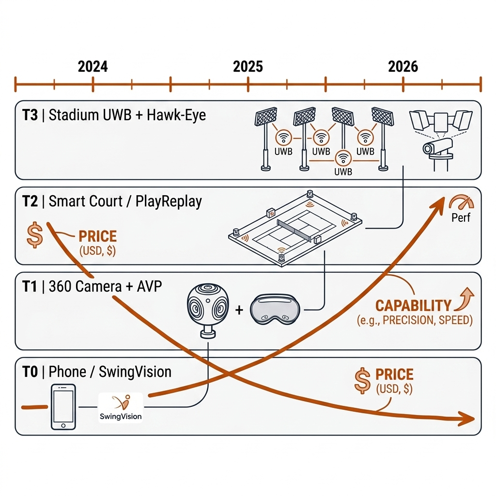
Apple silicon and the local lab
The lab machine is an Apple M4 Max with 64-128 GB unified memory. The M4 Max Neural Engine is 16-core and rated at 38 TOPS (FP8). Apple announced the M5 Ultra on August 25, 2026: it uses a quad-die UltraFusion architecture, features a 32-core Neural Engine, integrates Neural Accelerators into each GPU core for the first time on an Ultra chip, supports up to 512 GB unified memory with up to 1.2 TB/s bandwidth, and claims up to 4.3× faster peak AI performance than the M3 Ultra. The M5 Ultra Mac Studio is available for pre-order from August 25, 2026, with availability beginning September 22, 2026. [SPECULATION] For this book's pipeline, the M5 Ultra's largest impact is likely to be the extra unified memory: VGGT 1B, V-JEPA 2.1 2B, and local Qwen3-Omni 27B-30B variants become more practical, not because TOPS alone changes the model choice but because 512 GB removes the quantization trade-off for many workloads. The TOPS figure for the M5 Ultra Neural Engine is not officially published by Apple; the 38 TOPS M4 Max figure is confirmed.
The local VLM path is supported by mlx-vlm, which runs Qwen3-Omni, Phi-4-multimodal, InternVL3.5, Gemma 3, and SmolVLM2 on Apple Silicon. The MLX community releases quantized 4-bit/8-bit variants on Hugging Face, which is essential for fitting 27B-30B parameter models into laptop RAM. For a club that will not upload footage to a cloud API, this is the privacy-preserving fallback. The local path is slower and less capable than the API frontier, but it is auditable and offline.
33.4 Benchmarks (checked 2026-08-30)
The 2026 benchmark landscape is defined by SoccerNet's task expansion, the persistence of SportsMOT and TeamTrack as MOT floors, and the two public-data gaps that this book's lab chapters exist to fill: no public pickleball video benchmark, and no public rugby league tracking benchmark.
SoccerNet 2026
SoccerNet 2026, the sixth edition, ran until April 24, 2026, with results presented at CVSports, CVPR 2026, Denver. The Game State Reconstruction (GSR) task was dropped as a standalone challenge, though GSR train/val data remain downloadable. The six tracks are: (1) Spiideo SynLoc — single-frame world-coordinate athlete localization from synthetic and real data; (2) Ball Action Anticipation — predict the next 5 seconds of ball actions from a 30-second window; (3) SN-VQA-2026 — 14 soccer-understanding tasks with an agentic dev kit (SoccerAgent); (4) Player-Centric Ball Action Spotting (PCBAS) — what, when, and who (player/team/jersey); (5) Novel View Synthesis (SN-NVS) — broadcast to referee or player point of view; (6) FIFA Skeletal Tracking Light — single broadcast-camera skeletons under occlusion, blur, and PTZ motion. The FIFA task is the closest public benchmark to the rugby league broadcast-tracking problem. The full corpus is large and requires registration/NDA; the dev kits and annotation files are on Hugging Face and Codabench.
Multi-object tracking floors
SportsMOT (CC BY-NC 4.0) contains 240 clips of basketball, football, and volleyball, 1.6 million bounding boxes, and no game leaks across splits. It is the standard player-tracker stress test. The non-commercial license is a flag: a commercial coaching product cannot be trained on it without negotiation. TeamTrack (code MIT, data CC BY-SA 4.0) contains 150+ minutes of 4K-8K full-pitch soccer, basketball, and handball from drone top-view and fisheye side-view, with 4 million+ boxes and a trajectory variant that gives pitch coordinates. It is the freest large-scale MOT benchmark and the closest public proxy for whole-court pickleball geometry and full-pitch MOT methodology. Both are available on Hugging Face and Kaggle.
The pickleball gap
No benchmark-grade public video dataset exists for pickleball as of 2026-08-30. Community assets are limited to Roboflow Universe detection/keypoint sets (hundreds to thousands of images, typically CC BY), a small TrackNet-Pickleball port, and the pklmart dataset on Kaggle — "pklmart's Competitive Pickleball Extracts" — which contains over 300,000 shot-level records and rally outcomes from nearly 1,000 matches, mostly at skill levels 4.0 through professional. The dataset includes CSV files for rally, game, team, player, shot, and shot_type_ref. The Python library pklshop loads it into pandas DataFrames. pklmart is the first scale-grade analytical corpus for pickleball, but it is tabular, not video. The book's lab chapters effectively define the first public pickleball tracking dataset.
The rugby league gap
No public large-scale rugby league tracking dataset exists. The CEA Rugby Sevens Tracking Dataset (R7) provides three 40-second 1080p clips with tracking ground truth and is available through a non-commercial research request. NRL player tracking data is proprietary to the league and clubs. Generic MOT fails on rugby league because of dense contact, occlusion, and PTZ motion. The book's rugby league lane — annotate your own broadcast corpus — is a forced move, not a pedagogical choice. Public event statistics are available on NRL.com and via community scrapers, but raw X,Y coordinates are not. The open EPV reference for rugby league is Sawczuk et al. (2024), a Bayesian mixture model over field position and tackle count.
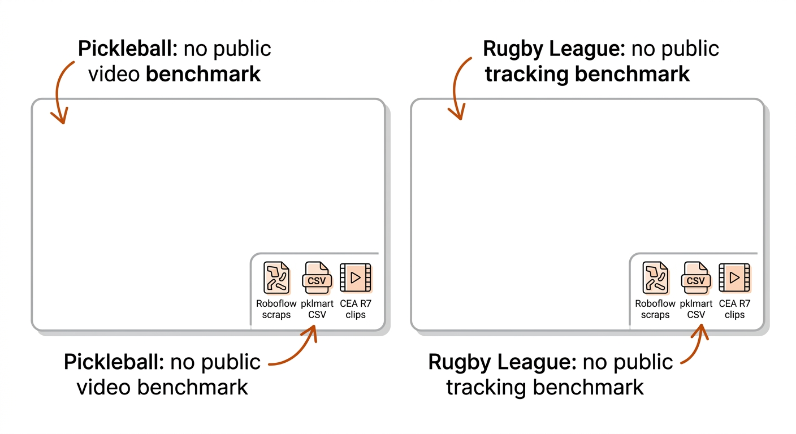
33.5 Agents (checked 2026-08-30)
The agent layer is where 2025-2026 moved fastest. The durable mental model is: an LLM is an orchestrator, a VLM is a describer, and the deterministic pipeline is the decider. The value is not a smarter model; it is the contract that makes the model's output auditable.
SportD and SportR
SportD (August 2026) is a strategic decision-making benchmark that asks frontier VLMs to pick the best on-ball action in FIFA World Cup 2022 clips, scored against a possession-value model. The published result is that frontier VLMs choose the optimal action roughly 30% of the time, while professional players choose it roughly 39% of the time. The exact final numbers and whether any 2026 model has closed the gap are [verify]. The lesson is the core evidence that VLMs describe sport but do not yet decide in sport. SportR (ICLR 2026) is a multi-sport reasoning benchmark that links fine-grained visual evidence to foul calls and rule reasoning, with human chain-of-thought annotations. Rule-grounded errors dominate: VLMs miss foul/infraction logic even when perception is correct. The exact task list and leaderboard are [verify].
MCP and the tool ecosystem
The Model Context Protocol (MCP) was the 2026 connective tissue for wrapping the perception stack as tools. The 2026-07-28 specification introduced a major architectural shift from a stateful, session-based model to a fully stateless request/response protocol. The mandatory initialize/initialized handshake was eliminated, the Mcp-Session-Id header was removed, and requests became self-contained with metadata in the _meta field. A new server/discover method allows cacheable capability discovery, and the protocol supports HTTP-native routing via Mcp-Method and Mcp-Name headers. This makes MCP servers deployable behind standard cloud load balancers and API gateways. The update is a breaking change from the 2025-11-25 stable release, with a 12-month deprecation window. For sports, the relevant existing servers include NVIDIA VSS Video-Analytics-MCP (CUDA-only), video-transcriber-mcp (Whisper), and mcp-video-analyzer (frame extraction + VLM captioning). [verify] whether a first mature tracking-data MCP server has appeared.
The explicit gap this book's Chapter 27 defines is a sport-tools MCP server that exposes calibrated court coordinates, tracking data in Metrica/SkillCorner format, and event schemas to an agent host. No such mature server existed as of 2026-08-30. Building it is the 2026 differentiator: once the perception pipeline is a tool, the frontier becomes your stack.
The autonomous match twin
The phrase "autonomous match twin" is not yet a standardized industry term. It describes the synthesis of two technologies: a digital twin (a live virtual replica of the match, players, or venue) and agentic AI (autonomous systems that reason, plan, and act without constant human intervention). In 2026, major sporting events such as the FIFA World Cup showcased integrated digital twins and AI agents for stadium operations, referee support, and fan engagement. The LALIGA / Globant AI Pods ecosystem, announced at NVIDIA GTC 2026, reportedly orchestrates hundreds of models across scouting, analytics, broadcast production, and fan experience. [SPECULATION] For a rugby league or pickleball practitioner, the honest projection is that a fully autonomous match twin — an agent that can independently plan tactics, call fouls, and run counterfactual simulations in real time — is not a 2026 product. It is a 2026-2027 research frontier. The pieces exist (perception, value models, LLM orchestration, MCP tools), but the integration, safety, and auditable decision loop do not. This book positions the match twin as the unbuilt frontier: build the deterministic pipeline first, then wrap it as tools, then let agents operate it, never the other way around.
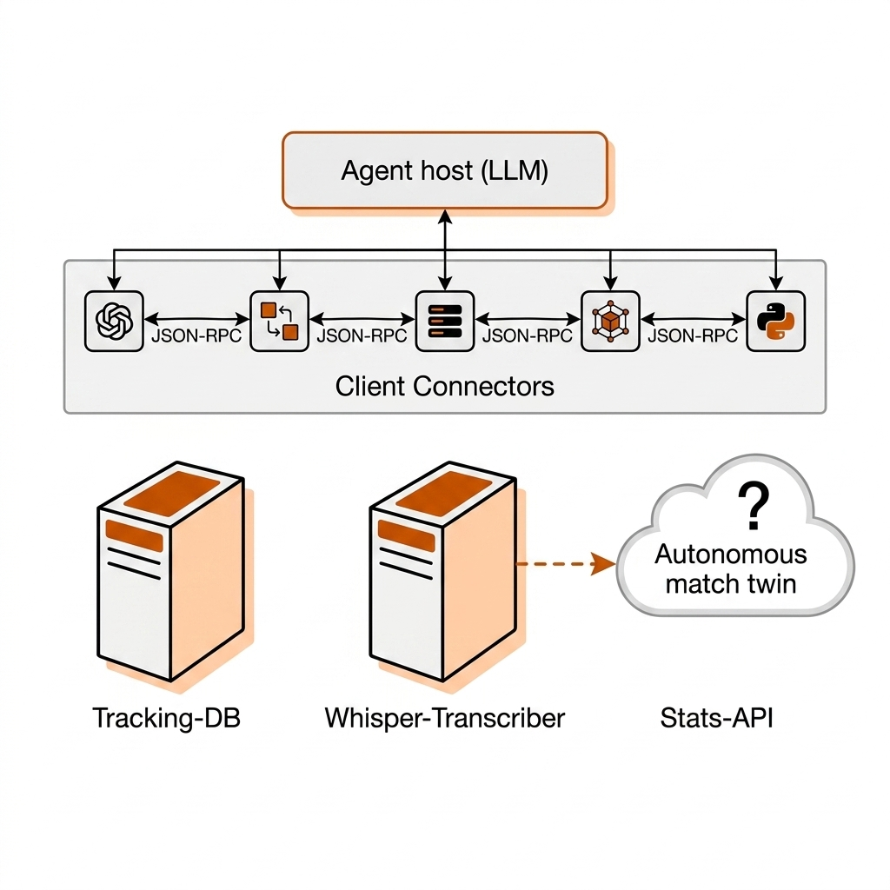
33.6 Honest Projections: What We Know vs What We Speculate
Frontier chapters are prone to hype. This section separates the verified 2026 state from the 2026-2027 speculation. Every speculative sentence is labeled.
Known (source-backed, checked 2026-08-30)
- Detectors: RF-DETR N/S/M/L (Apache 2.0), D-FINE/DEIM (Apache 2.0), and YOLO26 (AGPL) are the practical choices. The open-source DETR path is now the safest default for a sports product.
- Segmentation: SAM 3 and 3.1 are source-backed, but local MPS use is patch-dependent. The official CUDA/Triton path is the only verified production route.
- Tracking: CAMELTrack (Apache 2.0) and GTA (MIT) are the best open building blocks. The 81.04 HOTA SportsMOT score belongs to GTA, not CAMELTrack.
- Hardware: M4 Max 38 TOPS Neural Engine is confirmed. M5 Ultra is announced with 32-core Neural Engine, Neural Accelerators per GPU core, and 512 GB unified memory. Kinexon 500 Hz ball IMU is real and deployed in the 2026 World Cup ball. Prophesee has no official Mac arm64/MPS support. Insta360 X5 + Vision Pro is a real workflow. PlayReplay and Owl AI are both active in pickleball line-calling, but the definitive field vendor is not settled.
- Benchmarks: SoccerNet 2026 has six tracks; GSR is dropped as a standalone. SportsMOT and TeamTrack remain the MOT floors. pklmart is the best public pickleball analytical corpus. No public rugby league tracking dataset exists.
- Agents: SportD and SportR are real 2026 benchmarks showing that VLMs describe better than they decide. MCP went stateless in July 2026. No mature tracking-data MCP server exists.
Speculative (2026-2027, labeled)
- [SPECULATION] The M5 Ultra will make 128 GB-class local VLM and video-FM workloads routine, but it will not by itself close the VLM decision gap in SportD.
- [SPECULATION] An open PyTorch reimplementation of TrackNetV5 will likely appear in 2026-2027, because the paper is detailed enough; until then, the open ball-tracking ceiling remains TrackNetV4 or custom implementations.
- [SPECULATION] A public pickleball video benchmark will probably appear within 12-18 months, driven by the PPA/MLP broadcast corpus and community efforts. When it does, the book's G0.5 dataset becomes a comparison point, not the first.
- [SPECULATION] The autonomous match twin will be demonstrated in narrow domains (set-piece simulation, line-calling review, broadcast highlight generation) before it operates full open play. Rugby league, with its structured tackle count and set-piece restart cycle, may be an easier narrow target than continuous open play.
- [SPECULATION] Event cameras will remain a niche until a Mac-native SDK or an open-source wrapper (OpenEB port) lowers the friction below a graduate-student project.
33.7 What To Watch (2026-27 Season)
The quarterly watchlist converts the frontier into a set of verifiable checks. A practitioner should run through this list before claiming the chapter is current.
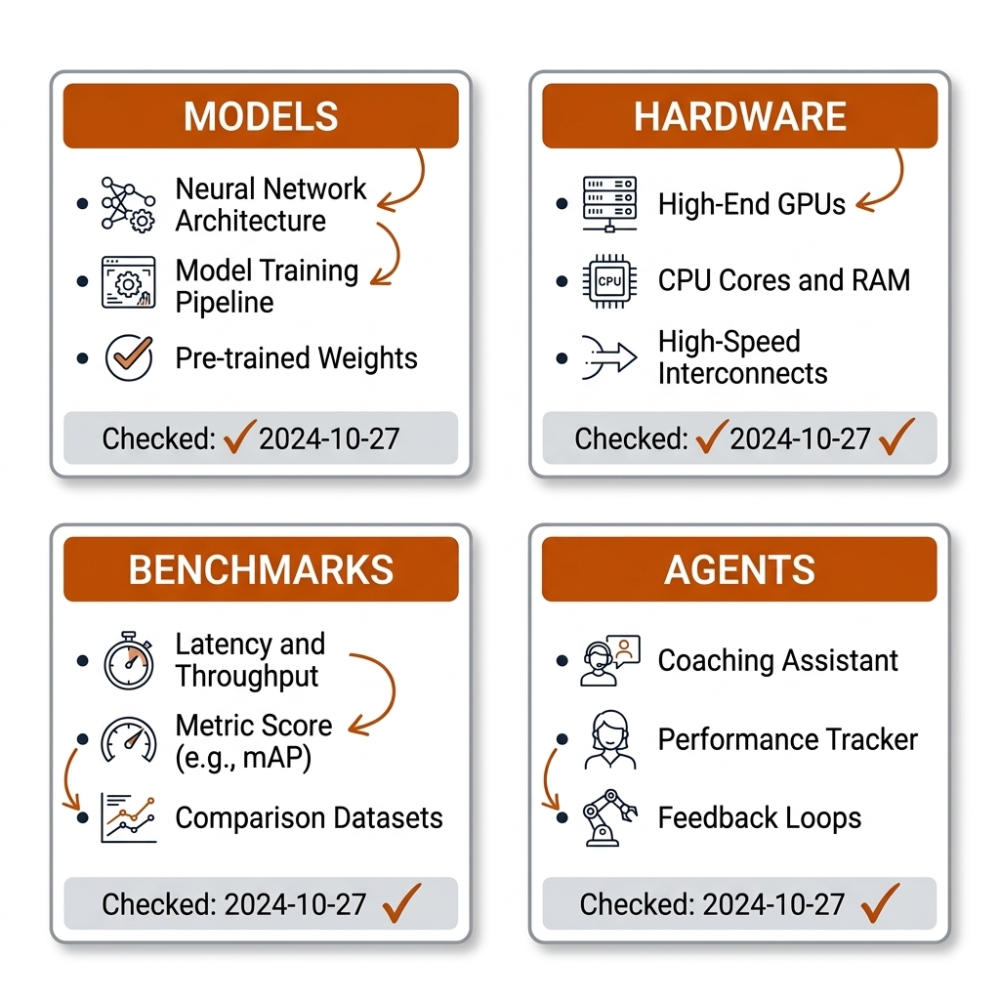
Models
- Does SAM 3 / 3.1 get a clean MPS or HF Transformers port that removes the custom CUDA NMS blocker?
- Does DEIMv2 re-license to Apache 2.0 or add a commercial tier?
- Does an open PyTorch reimplementation of TrackNetV5 ship?
- Does any 2026 sports paper benchmark V-JEPA 2.1 against supervised alternatives on sport-specific tasks?
Hardware
- Does Prophesee or the community release arm64 / MPS-friendly wheels for OpenEB/Metavision?
- Does PlayReplay or Owl AI publish accuracy numbers and pricing for pickleball line calling?
- Does a retail or dev-kit version of the Kinexon/Adidas Trionda smart ball appear?
- Does the M5 Ultra's Neural Engine get a public TOPS rating and reproducible MLX benchmarks?
Benchmarks
- Do SoccerNet 2026 challenge outcomes and the FIFA Skeletal Tracking Light code/weights get released?
- Does a public pickleball video tracking benchmark appear?
- Does any NRL, Super League, or expanded R7 release close the rugby league tracking gap?
- Does a new SportsMOT/TeamTrack leader displace GTA/CAMELTrack/Deep HM-SORT?
Agents
- Does a mature MCP server for tracking data or calibrated court coordinates emerge?
- Does any VLM close the SportD optimal-action gap to professional players?
- Does a primary DeepMind or CBF source confirm the reported Palmeiras/CBF open-play TacticAI deployment?
- Does TacSIm release code and a license?
33.7b The Ten Frontier Use Cases (What to Watch, 2026-27)
The watchlist above says what to re-check. This section says what to build toward: ten frontier use cases, each with the frontier itself, what it would unlock for the two sports, the honest status, a figure, and the specific watch-item that would promote it from speculative to buildable. All ten are speculative. None is running in the book's lab as of 2026-08-30; each carries its uncertainty on the label, and each cross-references the chapter that owns the underlying mechanism.
UC F01 — SAM 3 in the Book's Lab (the unbuilt)
The frontier: SAM 3's Promptable Concept Segmentation — one text prompt ("the yellow ball", "both paddles", "every player in white") detects, segments, and tracks all instances of a concept across video with stable IDs. What it would unlock: bootstrapping the Chapter 08/09 detector-tracker stack without training a custom detector first — a natural-language front end over the whole perception pipeline. Honest status: [SPECULATION] for this lab. The official repository is CUDA/Triton-first; local MPS use depends on Ultralytics or Hugging Face Transformers patches, and the custom CUDA NMS kernels remain the friction point [verify]. Watch item: a clean HF Transformers MPS port that removes the custom-CUDA NMS blocker.
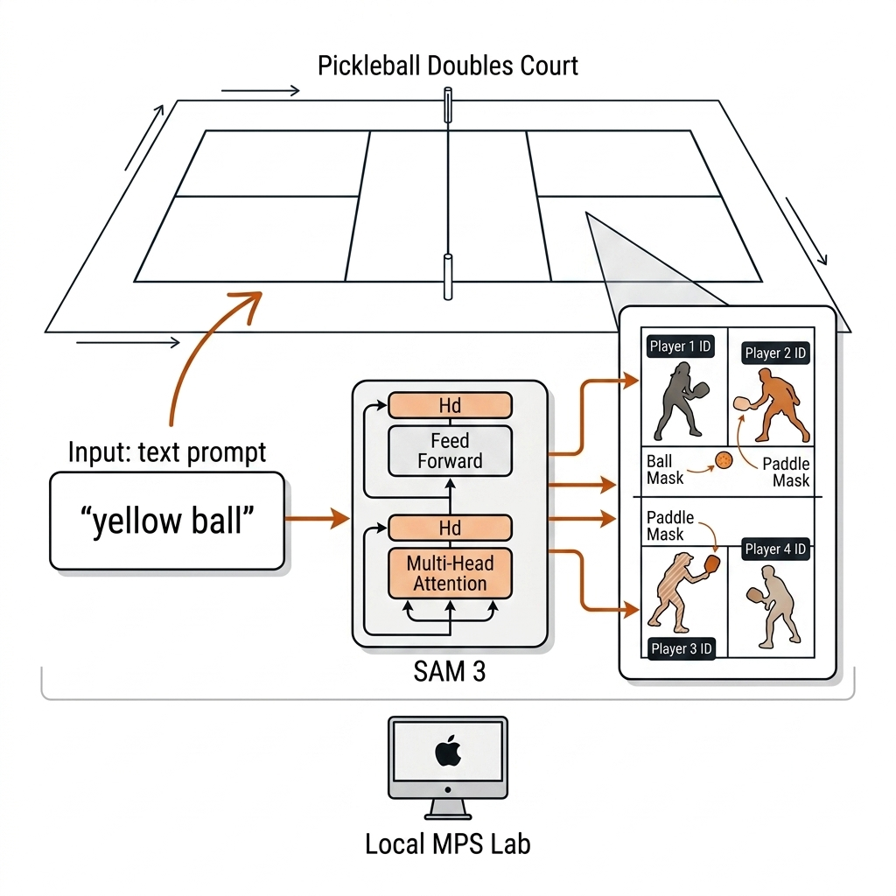
UC F02 — SAM-3D-Body on Sport Footage (the unbuilt — C10 UC07)
The frontier: single-view recovery of a full SMPL-X parametric body mesh (10,475 vertices) from one ordinary broadcast frame, DINOv3 backbone. What it would unlock: 3D biomechanics from match footage with no mocap rig — shoulder external rotation on a pickleball drive, true 3D body orientation and contact height in a rugby league tackle. Honest status: [SPECULATION]. The model is announced by Meta (2025-26); the book has not validated it on sport footage. C10 UC07 states the claim; C11 documents the monocular 2D-to-3D lifting limits this specific model targets. Watch item: an open checkpoint plus a sport-footage evaluation against the FIFA Skeletal Tracking Light benchmark.
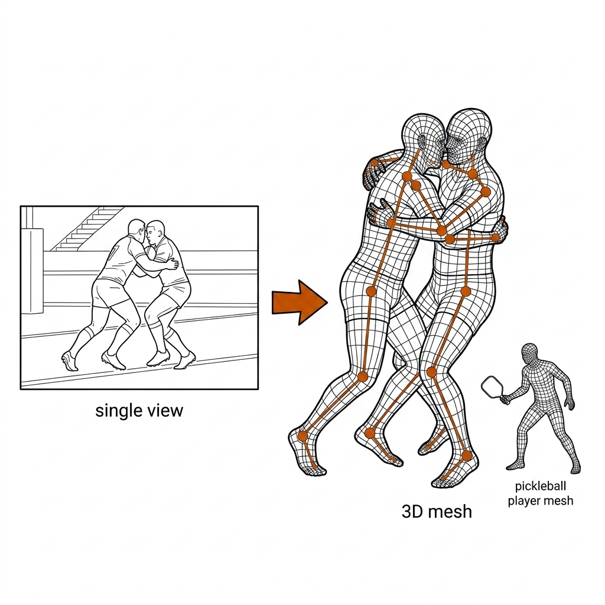
UC F03 — DART on pb-003 (the unbuilt — C10 UC16)
The frontier: open-vocabulary role detection — the coach types arbitrary role queries and DART's shared O(1) backbone decodes all of them in one pass, claimed at 15.8 FPS. What it would unlock: role-aware tactical telemetry ("server", "returner", "kitchen poacher", "dummy half", "marker defender") without a custom labeling campaign, feeding C23 tactical ML directly. Honest status: [SPECULATION]. The AP/FPS figures are the paper's (arXiv 2603.11441); the book has not run DART on the pb-003 corpus [verify]. Watch item: an open DART checkpoint, then a first measured run on pb-003 with M4 Max latency numbers.
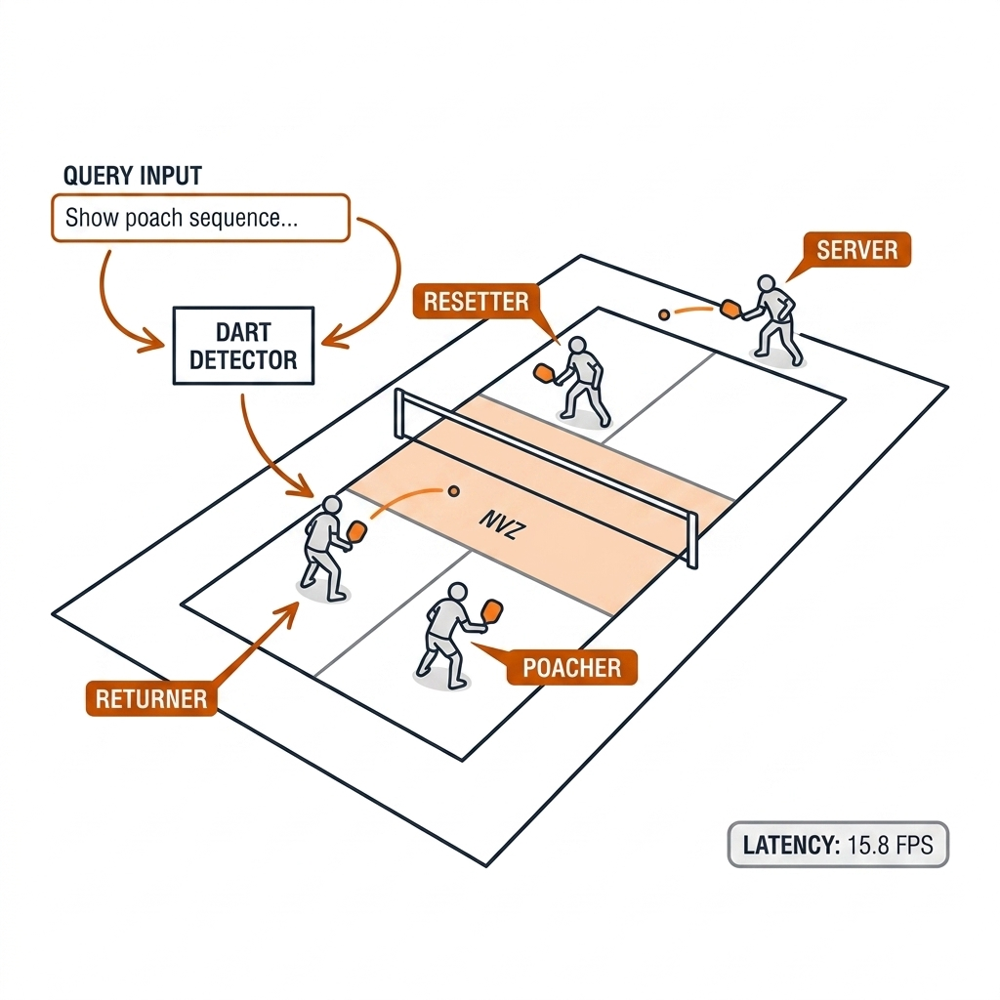
UC F04 — The Agentic Match Twin (the unbuilt — C24)
The frontier: a live digital twin of the match plus an agentic layer that plans tactics, runs counterfactual simulations, and proposes in-match adjustments without constant human steering. What it would unlock: C24 simulation moves from post-session analysis to live decision support; the C27 MCP tool wrap is the enabling contract that keeps every agent action auditable. Honest status: [SPECULATION]. The 2026 showcases (FIFA World Cup stadium twins, the LALIGA/Globant AI Pods orchestration) are operations- and fan-facing; no auditable on-field decision twin exists. The book's ordering holds: build the deterministic pipeline, wrap it as tools, then let agents operate it — never the reverse. Watch item: a narrow-domain twin (set-piece simulation, line-call review, highlight generation) shipped with a published audit trail.
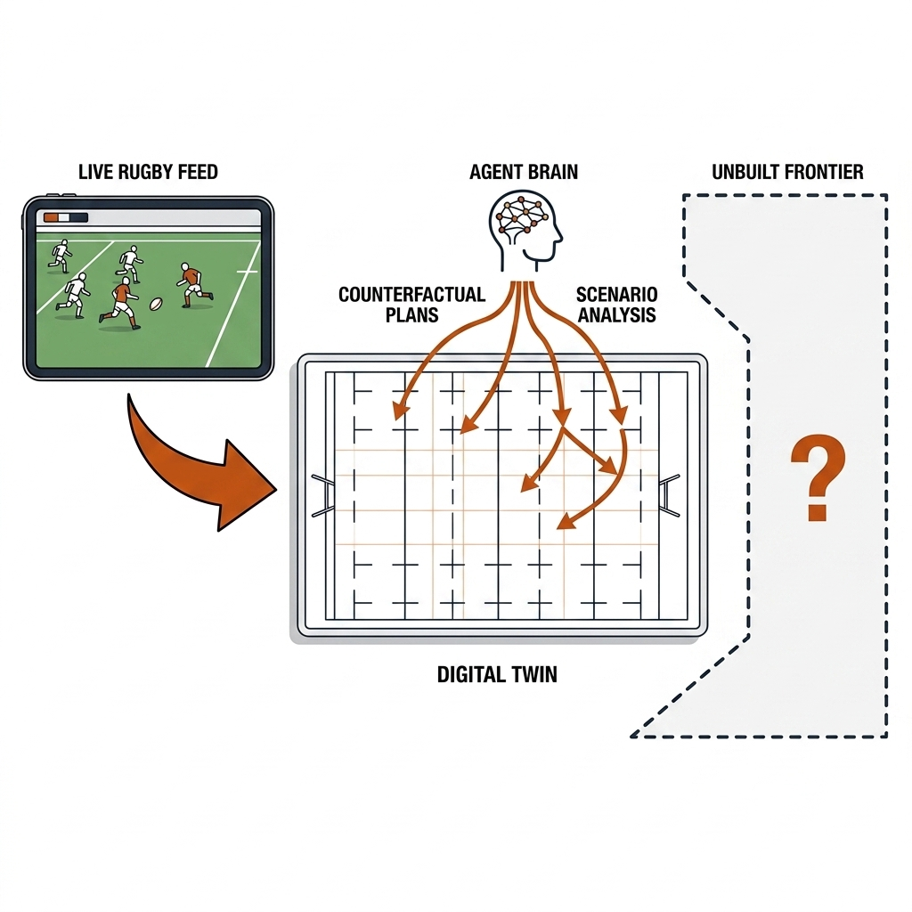
UC F05 — The Smart Ball (2026 hardware)
The frontier: the Kinexon sensor package — a 500 Hz IMU plus UWB, mechanically counter-balanced inside the ball — deployed in the Adidas Trionda at the 2026 FIFA World Cup, reporting the exact millisecond of every touch, plus speed, trajectory, and spin. What it would unlock: ground-truth contact events against which the optical pipeline calibrates — C12's ball-tracking error bars become measurable against a physical reference rather than estimated. Honest status: real hardware, but league-bundled; no retail or dev-kit version exists [verify]. For pickleball there is no credible smart ball at all, so this is a watch, not a build. Watch item: any retail/dev-kit connected ball, or the first pickleball smart-ball prototype.
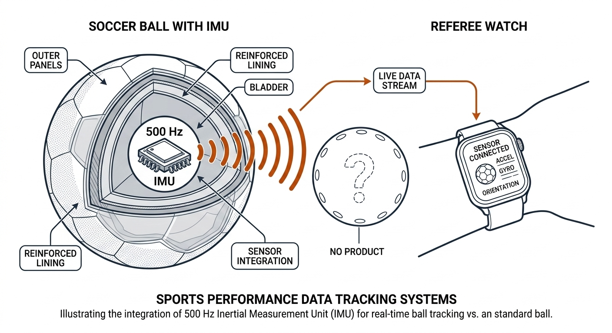
UC F06 — The VLM Plate (the C25 feed)
The frontier: the grounding gate that plates VLM commentary against coordinate truth before it reaches a coach — describe-then-verify, never describe-then-trust. What it would unlock: auditable VLM match reports. SportD's finding — frontier VLMs pick the optimal on-ball action roughly 30% of the time versus roughly 39% for professionals [verify] final numbers — means VLMs must be constrained to narration over verified events, not decision-making. Honest status: [SPECULATION] as a product. The components exist in the book — the C25 grounding gate, the C10 UC17 adversarial critic, the measured E07 66.7% baseline hallucination error — but the end-to-end grounded plate has not been measured. Watch item: whether any 2026-27 VLM closes the SportD gap, and the first published grounded-critic error rate below the E07 baseline.
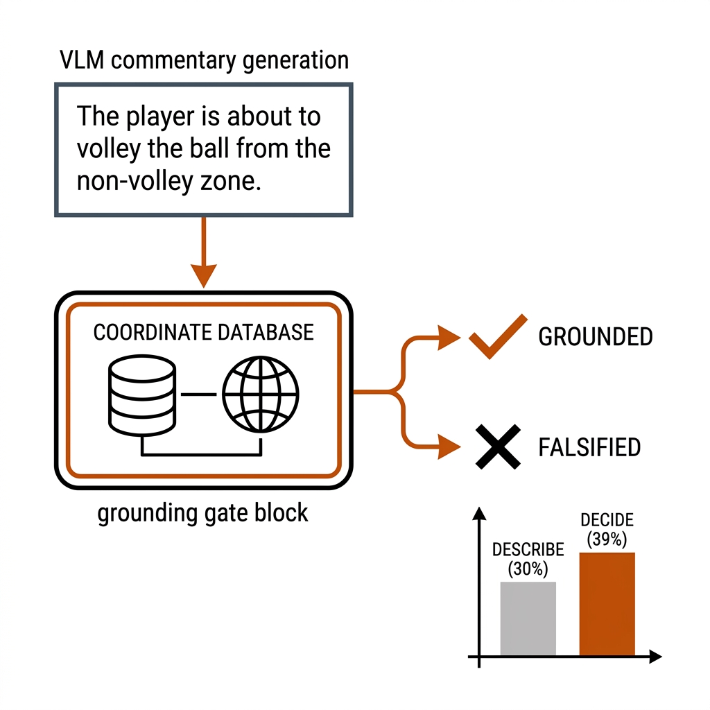
UC F07 — Edge Neural (M4/M5)
The frontier: the local-lab ceiling moves. The M5 Ultra (announced 2026-08-25, availability 2026-09-22) brings up to 512 GB unified memory at 1.2 TB/s, a 32-core Neural Engine, Neural Accelerators in every GPU core, and a claimed 4.3× peak AI uplift over the M3 Ultra. What it would unlock: local VGGT-1B, V-JEPA 2.1 2B, and 27-30B-class VLMs without the 4-bit quantization trade-off — a fully offline, privacy-preserving club lab, which is also the technical half of C31's consent answer. Honest status: [SPECULATION] for workloads. The hardware is announced, not benchmarked; Apple has not published an M5 Ultra Neural Engine TOPS figure [verify]. Watch item: reproducible MLX benchmarks of the book's exact stack on M5 Ultra.
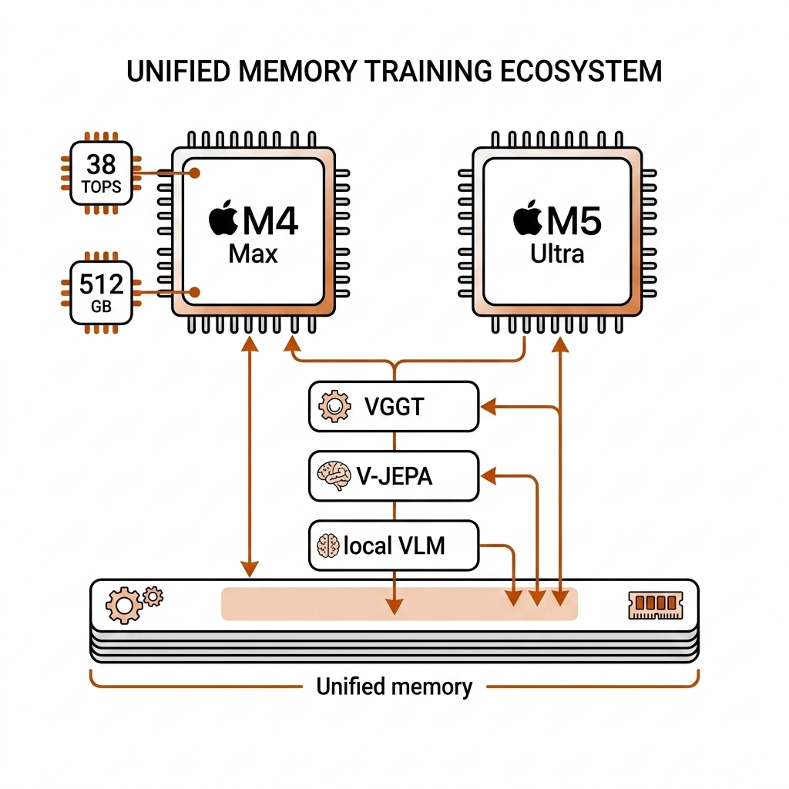
UC F08 — The New Datasets (the pklmart corpus)
The frontier: pklmart — over 300,000 shot-level records from nearly 1,000 competitive matches at 4.0 through professional level, loadable into pandas via pklshop — the first scale-grade analytical corpus for pickleball, albeit tabular rather than video. What it would unlock: priors for the C22 value models, shot-type distributions to validate against, and a public comparison point for the book's own G0.5 dataset. Honest status: real and downloadable on Kaggle today; the video gap persists. [SPECULATION] a public pickleball video benchmark likely appears within 12-18 months — when it does, G0.5 becomes a comparison point rather than the first. Watch item: any public pickleball video tracking benchmark; any NRL, Super League, or expanded R7 release that closes the rugby league tracking gap.
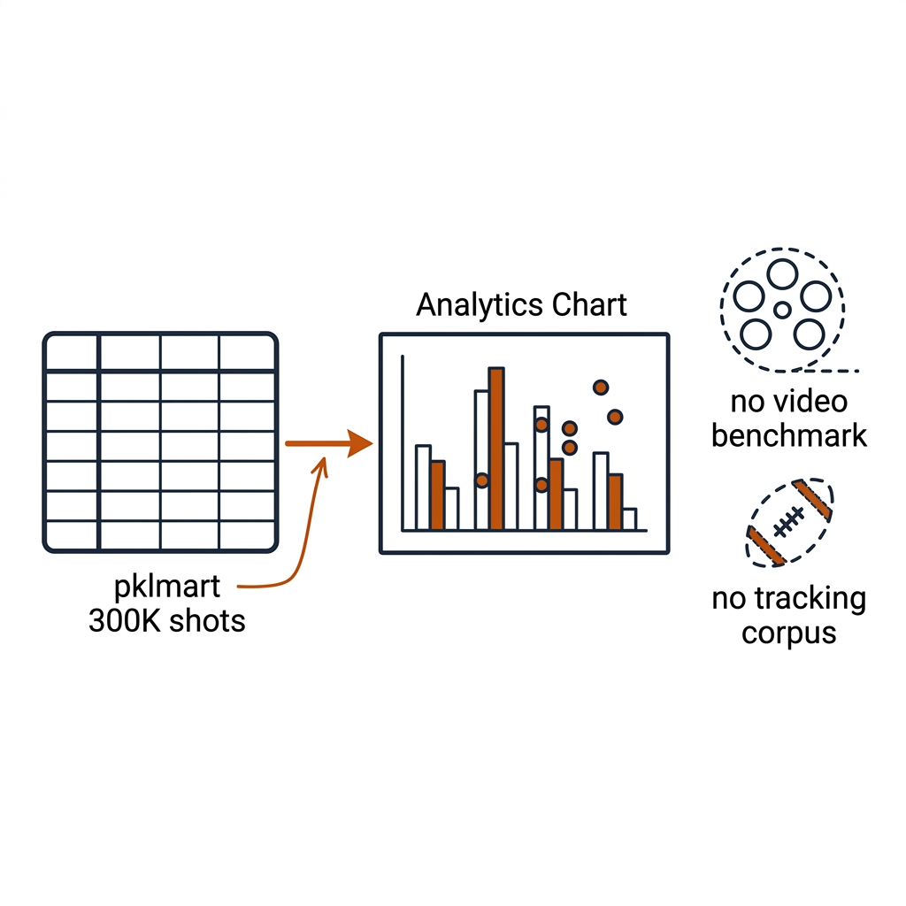
UC F09 — The Officiating Frontier (the Bunker + AI)
The frontier: AI adjudication arriving from both ends of the book. In pickleball, PlayReplay's net-post cameras debuted at the PPA Finals on 2026-05-04 under the UPA partnership while Owl AI's software-only route holds the MLP partnership; in rugby league, the Bunker stands to gain skeletal telemetry (Hawk-Eye SkeleTRACK's 29-point skeletons) and the C10 UC08 route to objective 3D contact height on high tackles. What it would unlock: objective line calls, shorter challenges, and evidence-grade high-tackle review. Honest status: pilots are deployed, but no vendor has published a public accuracy benchmark against human officials [verify] — the officiating frontier is real, the evidence is not yet public. Watch item: published accuracy numbers and pricing from PlayReplay or Owl AI; FIFA Skeletal Tracking Light code and weights.
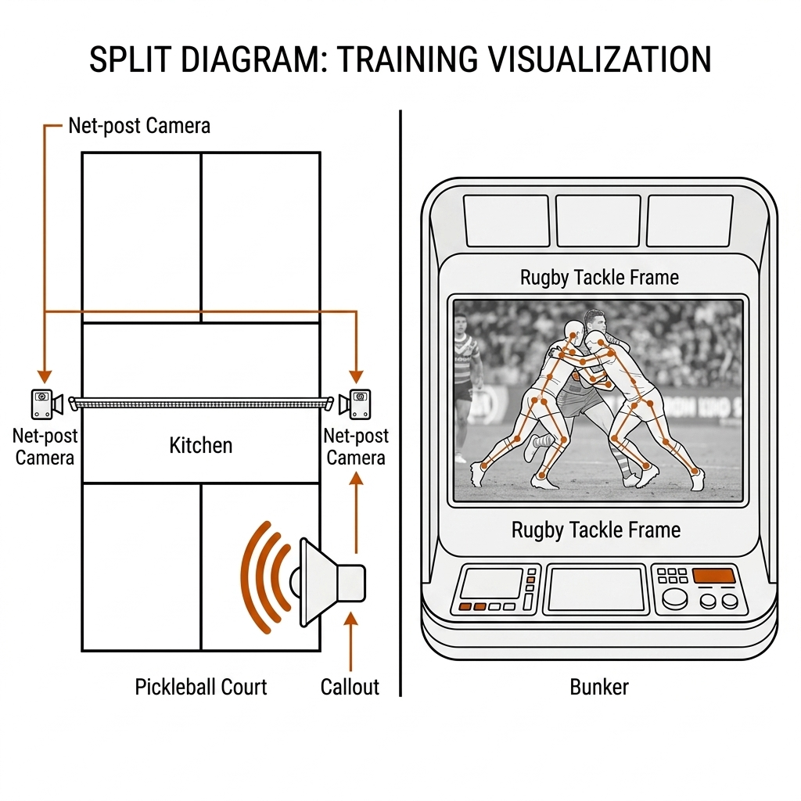
UC F10 — The Ethics Frontier (the facial risk — the C31 feed)
The frontier: the same ReID and foundation features that track a player can identify a face. Amateur sport has no consent framework for this, minors are on court, and biometric-privacy law treats faceprints as regulated data. What it would unlock: a governance pattern — consent capture, on-device processing (UC F07), face blurring at ingestion, retention limits — that lets a club adopt the entire stack without the liability. Honest status: [SPECULATION] as a resolved practice. C31 defines the deployment contract; no amateur-sport biometric standard exists [verify]. Watch item: the first amateur league — pickleball or rugby league — to publish a biometric and consent policy for AI video analysis. That document becomes the template every club copies.
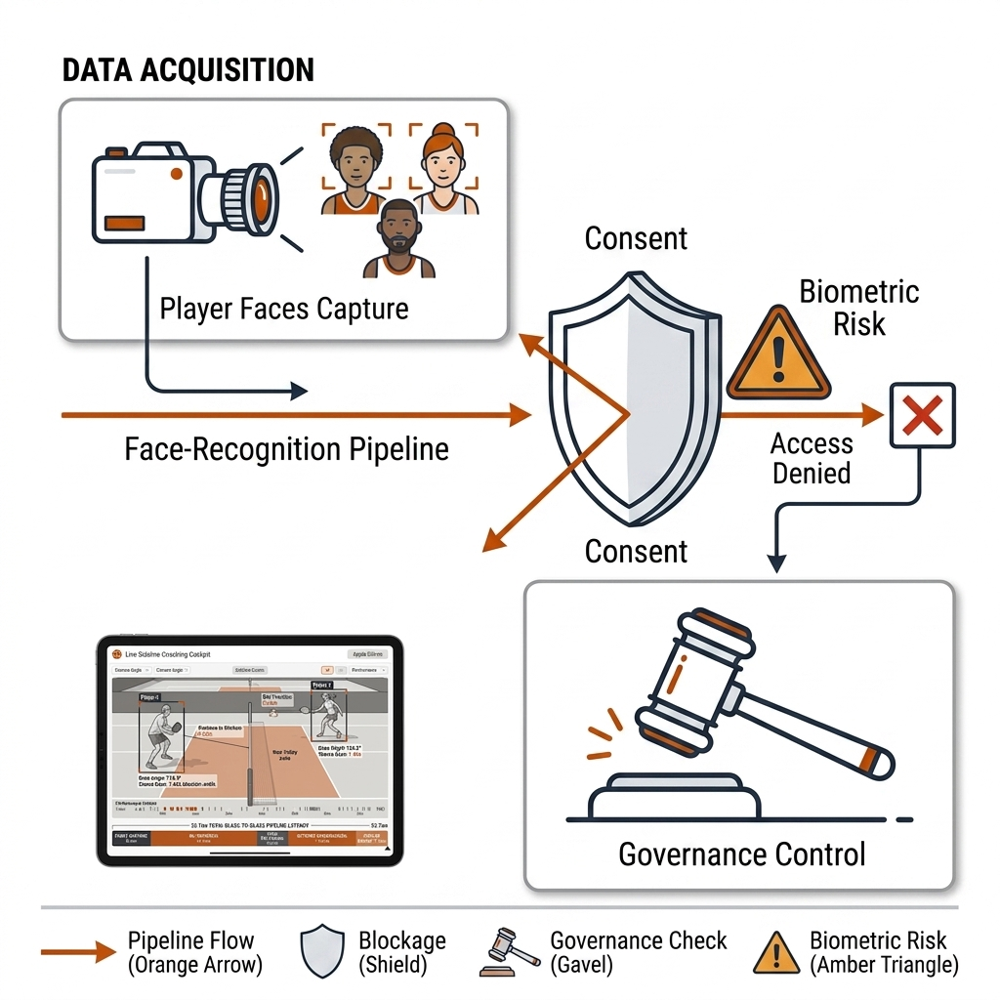
What This Adds to the Pipeline
The ten cases map back onto the book's spine: F01-F03 upgrade the C08/C09/C10 perception layers; F04 and F06 define the C24/C25/C27 agent layer's next contract; F05 and F09 feed C12 measurement and the C28 cockpit with ground truth; F07 is the C30/C31 hardware-and-consent enabler; F08 feeds the C22 value models their first public priors; F10 is the C31 deployment gate. Every entry is speculative by design — the watch-items are the promotion criteria, and the staleness rules of §33.8 decide when one graduates into a buildable chapter.
33.8 Staleness Mechanism and Practitioner's Reading
The frontier changes the tools, not the discipline. The staleness mechanism is what keeps the two separate.
The staleness rules
- Every fast-moving claim in this chapter carries a checked date. A frontier entry older than six months is a history claim, not a current frontier claim.
- Any entry marked [verify] is a known uncertainty. Do not promote it from [verify] to settled without checking the primary source.
- If a source link is dead or a repository is archived, the entry is downgraded to [verify] until a replacement primary source is found.
- License terms must be re-checked before any course material, product, or commercial use is described; licenses change (DEIMv2 non-commercial, DINOv3 custom, RF-DETR+ PML, SAM custom).
- The quarterly watchlist (§33.7) is the practical checklist for the next revision.
Practitioner takeaways
- The detector is settled. Pick an Apache 2.0 DETR (RF-DETR N/S/M/L, or D-FINE/DEIM) and stop treating the YOLO line as the default; the AGPL cost is the only variable that matters for commercial use.
- The ball tracker is contested. The open route is TrackNetV4 plus your own labels. TrackNetV5's closed weights are a cautionary case: a frontier you cannot build on is a rumor, not a stack.
- The identity problem is still open. For rugby league, jersey OCR plus roster fusion is the pro path; for pickleball, gallery plus role priors is the amateur path. SoccerNet PCBAS and GSR ablations show that jersey identity is the single most damaging attribute to miss.
- The 3D reconstruction lane is Colab's. VGGT's MPS port is the M4-adjacent rung; high-end 3D Gaussian Splatting replays remain on cloud GPUs. The honest cost table from Chapter 14 still applies.
- The agent layer is the 2026 differentiator. The MCP sport-tools server is the gap. Build it (Chapter 27) and the frontier becomes your stack.
- Dual-sport discipline: Pickleball benefits from fixed-camera geometry, cheap 360° review, and the first tabular benchmark (pklmart), but it lacks video and ball tracking benchmarks. Rugby league has richer broadcast context and a published EPV model, but tracking is forced into self-annotation and identity is hard. The same pipeline design works for both; only the data cost changes.
The through-line: an equivariant model still needs the Chapter 20 confidence interval, a foundation feature still needs the Chapter 12 physics prior, a frontier VLM still needs the Chapter 25 grounding gate. The book's method is the durable part; this chapter's table is the ephemeral part, and the staleness banner is what keeps them separate.
33.9 Sources
- RF-DETR:
https://github.com/roboflow/rf-detr, arXiv 2511.09554,https://rfdetr.roboflow.com/ - RF-DETR+:
https://github.com/roboflow/rf-detr_plus(PML 1.0) - D-FINE:
https://github.com/Peterande/D-FINE, OpenReview MFZjrTFE7h - DEIM:
https://github.com/ShihuaHuang95/DEIM, arXiv 2412.04234 - DEIMv2:
https://github.com/Intellindust-AI-Lab/DEIMv2, arXiv 2509.20787 - SAM 3:
https://github.com/facebookresearch/sam3, arXiv 2511.16719,https://ai.meta.com/blog/segment-anything-model-3/ - SAM 3.1:
https://github.com/facebookresearch/sam3/blob/main/RELEASE_SAM3p1.md - DINOv3:
https://github.com/facebookresearch/dinov3, arXiv 2508.10104 - CAMELTrack:
https://github.com/TrackingLaboratory/CAMELTrack, arXiv 2505.01257 - GTA:
https://github.com/sjc042/gta-link, arXiv 2411.08216 - TrackNetV5: arXiv 2512.02789, SDK
https://github.com/codelancera-offical/TrackNetV5-SDK - VGGT:
https://github.com/facebookresearch/vggt,https://vgg-t.github.io/, arXiv 2503.11651 - VGGT-1B-Commercial:
https://huggingface.co/facebook/VGGT-1B-Commercial - Theiner CVSports 2026:
https://openaccess.thecvf.com/content/CVPR2026W/CVsports/html/Theiner_Unified_Sports_Field_Registration_with_Lens_Distortion_Modeling_CVPRW_2026_paper.html - V-JEPA 2 / 2.1:
https://github.com/facebookresearch/vjepa2, arXiv 2506.09985, arXiv 2603.14482 - TacticAI:
https://deepmind.google/discover/blog/tacticai-ai-assistant-for-football-tactics/, Nature Communications 2024 - TacSIm: arXiv 2603.25199
- SportD: arXiv 2607.14616
- SportR: ICLR 2026 virtual poster 10008511,
https://huggingface.co/papers/2511.06499 - Kinexon:
https://kinexon-sports.com/ - Adidas Trionda / FIFA Connected Ball Technology:
https://inside.fifa.com/innovation/innovating-the-game/connected-ball-technology - Hawk-Eye:
https://hawkeyeinnovations.com/ - Prophesee:
https://prophesee.ai/, OpenEBhttps://github.com/prophesee-ai/openeb - Insta360 X5:
https://insta360.com/ - PlayReplay:
https://playreplay.io/news/upa-partners-with-playreplay-for-electronic-line-calling-technology - Owl AI / MLP:
https://majorleaguepickleball.co/news/major-league-pickleball-announces-partnership-with-sports-tech-company-owl-ai/ - Apple M5 Ultra:
https://www.apple.com/newsroom/2026/08/apple-introduces-new-mac-studio-with-m5-max-and-m5-ultra/ - mlx-vlm:
https://github.com/Blaizzy/mlx-vlm - SoccerNet 2026:
https://www.soccer-net.org/challenges/2026 - FIFA Skeletal Tracking Light:
https://inside.fifa.com/innovation/innovation-programme/skeletal-tracking - SportsMOT:
https://github.com/MCG-NJU/SportsMOT, arXiv 2304.05170 - TeamTrack:
https://github.com/AtomScott/TeamTrack, arXiv 2404.13868 - pklmart:
https://www.kaggle.com/datasets/cakesofspan/pklmarts-competitive-pickleball-extracts,https://pklmart.com/ - pklshop:
https://pypi.org/project/pklshop/ - CEA R7 Rugby Sevens Tracking:
https://kalisteo.cea.fr/wp-content/uploads/2022/04/README_R7.html - Rugby league EPV (Sawczuk et al. 2024):
https://journals.plos.org/plosone/article?id=10.1371/journal.pone.0308222, arXiv 2212.10904 - MCP 2026-07-28 spec:
https://modelcontextprotocol.io/specification/2026-07-28/basic,https://blog.modelcontextprotocol.io/posts/2026-07-28/ - LALIGA / Globant agentic AI:
https://www.globant.com/news/globant-laliga-agentic-ai-sports-nvidia-gtc-2026 - Consolidated research dossier:
book-research/Research Briefs/2026-09-05-c33-frontier.md